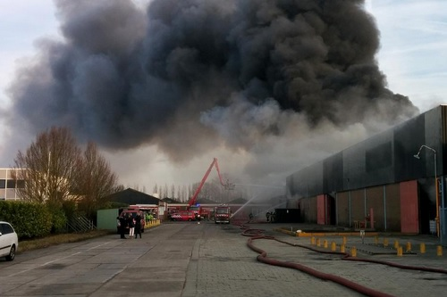
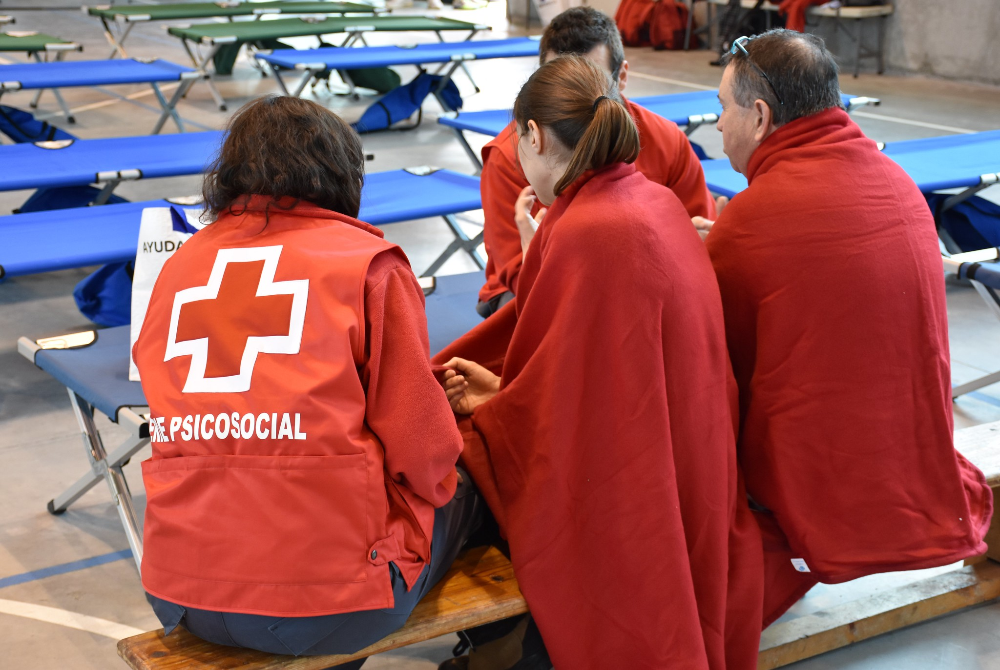
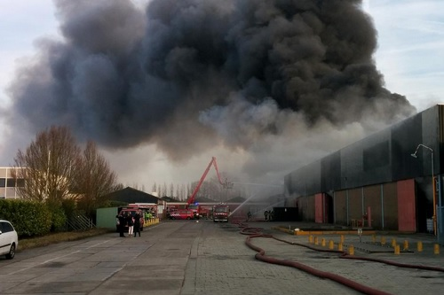
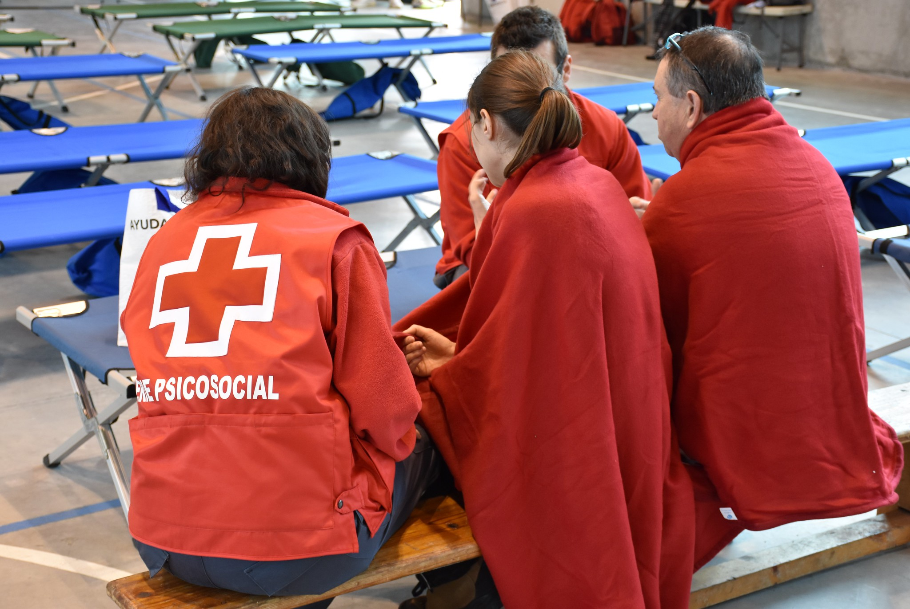

Los bomberos son los encargados de combatir incendios y rescatar personas en situaciones de emergencia. Su labor es fundamental para garantizar la seguridad de la población.
SERVICIOS QUE OFRECEN
- Extinción de incendios
- Rescates en accidentes de tráfico
- Rescates en altura / estructuras colapsadas
- Emergencias químicas o biológicas
- Inundaciones
- Prevención de incendios
- Inundaciones
- Atención a incendios forestales
El Samur es el servicio de emergencias médicas de Madrid, encargado de proporcionar atención médica de urgencia y traslado a hospitales en situaciones críticas.
SERVICIOS QUE OFRECEN
- Atención médica urgente en la vía pública
- Soporte vital avanzado
- Traslado a hospitales
- Intervención en accidentes múltiples o catástrofes
- Atención en eventos masivos
- Coordinación con hospitales y cuerpos de seguridad
- Apoyo psicológico inmediato

La Guardia Civil es una fuerza de seguridad del Estado encargada de la protección de la ciudadanía y el mantenimiento del orden público en áreas rurales y urbanas.
SERVICIOS QUE OFRECEN
- Seguridad ciudadana
- Protección del medio ambiente (SEPRONA)
- Tráfico y accidentes en carreteras
- Investigación criminal y ciberdelitos
- Control de armas y explosivos
- Protección ante violencia de género
- Antiterrorismo

Cruz Roja es una organización humanitaria que brinda asistencia en situaciones de emergencia, desastres y crisis, proporcionando ayuda a las personas más vulnerables.
SERVICIOS QUE OFRECEN
- Primeros auxilios y asistencia sanitaria
- Transporte sanitario (ambulancias)
- Atención en emergencias y catástrofes
- Apoyo psicológico y social
- Búsqueda y reunificación de personas
- Apoyo a personas mayores, inmigrantes y sin hogar
- Formación en primeros auxilios y socorrismo

Las emergencias ambientales se refieren a situaciones que afectan el medio ambiente y la salud pública, como derrames químicos, incendios forestales y desastres naturales.
SERVICIOS QUE OFRECEN
- Incendios forestales
- Inundaciones y lluvias torrenciales
- Deslizamientos de tierra
- Derrames tóxicos o químicos
- Contaminación del agua/aire
- Tormentas eléctricas o fenómenos extremos (ola de calor, frío, viento)
- Terremotos o erupciones

La Protección Civil es un servicio que se encarga de prevenir y gestionar situaciones de emergencia, así como de coordinar la respuesta ante desastres naturales o provocados por el ser humano.
SERVICIOS QUE OFRECEN
- Prevención de riesgos naturales y tecnológicos
- Coordinación de evacuaciones y refugios
- Gestión de emergencias y catástrofes
- Colaboración con bomberos, policía, cruz roja y servicios médicos
- Simulacros y formación ciudadana
- Apoyo logístico en eventos masivos
 


